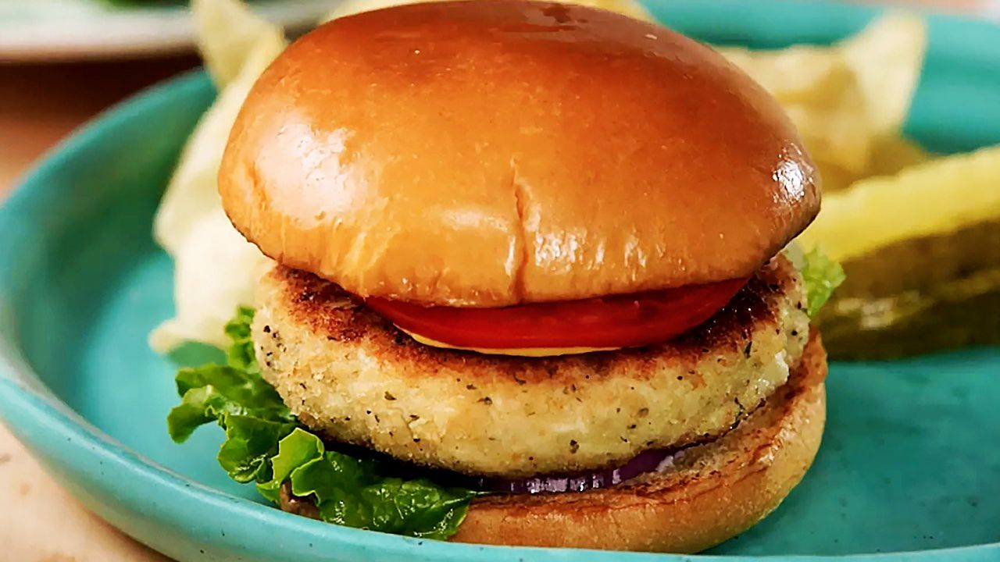

Chicken Burger
Home
Menu

Ingredients
- Chicken breast (ground or fillets)
- Burger buns
- Cheese slices
- Lettuce
- Tomato slices
- Onion slices
- Mayonnaise
- Ketchup
- Salt
- Pepper
Instructions
- Season chicken with salt and pepper.
- Cook chicken (grill, pan-fry, or bake) until cooked through.
- Toast burger buns lightly.
-
Assemble burger: bottom bun, chicken, cheese, lettuce, tomato, onion,
mayonnaise, ketchup, top bun.
Optional notes: You can add other toppings like pickles, bacon, or your
favorite sauces. Serve with fries or a salad.